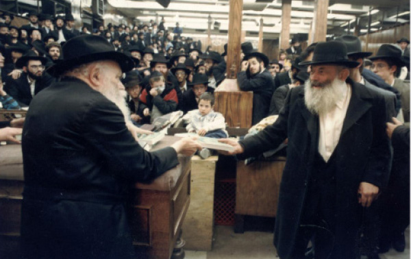

A Proud Jew and Chassid in a Top Secret Soviet Warplane Facility
He was a man of chesed who provided food for the needy and shared his home with any Chassid who needed a roof over his head , even if he was being pursued by the cursed communists . * He used his senior position in a munitions factory that manufactured combat planes to help his fellow Chassidim. * With his charming personality he had young men released from army duty , thus saving many lives. * His wife and family reminisce about the great Chassid, R’ Sholom Zev Krogliak a”h
|
 |
Every week, for twenty-five years, R’ Yitzchak Zilber (1917-2003), a distinguished Russian rabbi in Eretz Yisroel, would visit the Chassid R’ Sholom Zev Krogliak and spend a long time talking to him. Why did he do this? The Krogliak family explained:
“It was 5720/1960 and the authorities were after R’ Zilber. The situation worsened and R’ Zilber had to flee his home in Kazan. After he escaped, government officials appeared at his house to remove his children and place them in a government orphanage.
“Their frightened mother pleaded for her children and it was a miracle that her request was granted. As soon as the officials left, she packed their few belongings and escaped with her two young children. After a long trip, they arrived in our house in Tashkent. Later on, R’ Zilber joined them. He knew my father from before, which is why they stayed in our home a long time. My father also helped R’ Zilber find a job that did not entail his working on Shabbos. He eventually found them a place to live. That is how their long-term friendship began.”
R’ Sholom Zev and his wife Leah Krogliak were known for their hospitality, even for those fleeing the authorities, something that entailed great danger for them. Their home consisted of no more than two bedrooms and a small kitchen in which the parents and four children lived.
“When there is room in the heart, there is always room in the house,” say the children. “Nobody said it was too crowded.”
VOLODYA IS ONE OF A KIND
R’ Sholom Zev Krogliak (in Yiddish: Velvel, and in Russian: Volodya) was born on 29 Elul 5674/1914 in Bogoslav in the Kiev district of the Ukraine. His father, R’ Aharon, was from a longstanding rabbinic family, and his mother, Tzippora, was the daughter of R’ Pinchas Auerbuch. They said about his father than when he read the chapter LaM’natzeiach before the blowing of the shofar, everyone was shaken up by his crying.
R’ Sholom Zev’s family were not Lubavitchers; they were religious-rabbinic people who did not belong to any group. He acquired the midda of hospitality from his parents whose house was always open to guests.
After the Communist Revolution, the family moved to Moscow in the hopes of being less visible among millions of people so that the communists would not find the father who served as a rabbi. However, shortly after they arrived in Moscow, R’ Aharon took the trolley and an anti-Semite pushed him off the moving vehicle. His feet were severely injured and he remained a cripple for the rest of his life.
As a result, the boy Sholom Zev had to support the family. At age fifteen he went to work. In Moscow, he met Lubavitcher Chassidim for the first time.
When he grew older, he wanted a profession and he went to university. His studies were night classes so he wouldn’t desecrate the Shabbos. Although he was in university, he remained staunchly religious.
R’ Dovid Chein of Kfar Chabad spoke about this:
“In my youth, I told my father R’ Yehuda Chein that I wanted to attend university, but he refused. He was afraid for my religious commitment. I told him, ‘Volodya Krogliak studies in university and he doesn’t desecrate the Shabbos.’
“My father said, ‘Volodya is one of a kind.’”
As a young man, R’ Sholom Zev was involved in communal matters. In Moscow there was a secret organization called Achim, whose purpose was to help the T’mimim who learned full time and to provide material help for families where the father had been arrested by the communists for being religious. R’ Sholom Zev volunteered to transfer money from place to place despite the great danger this entailed.
PARTING AND MEETING
In 5699/1939, R’ Sholom Zev married Leah, the daughter of R’ Yaakov Dayan. The wedding took place in the Palant home in Moscow. Their oldest son, Dovid Yeshaya, was born a year later. They had three other children, Sarah Itta (Lerner), Avrohom Yaakov, and Chaim Tzvi. The four of them gathered to talk about the father’s life.
The Krogliak home in Moscow was open to all in need. This was especially important in those difficult days when many Jews were starving. On a regular basis, their table had bread, potatoes and herring. Whoever wanted was welcome to join them. This was despite the strained financial situation of the Krogliak couple.
R’ Sholom Zev worked in a military factory as a metal engineer. He was one of the developers of the first Katyusha. Then he worked as an engineer in a factory that manufactured planes. As the German army approached Moscow, his wife and little son fled to Samarkand in Uzbekistan. Due to the demands of his work, R’ Sholom Zev remained behind. After some time, the authorities decided to move the factory to Tashkent, the capitol of Uzbekistan. There he united with his family after several months of separation and uncertainty.
His wife relates:
“After they moved the factory, I did not know where my husband was for a few months. Afterward, we found out that he had gotten orders to move away from the front along with the other factory employees.
“On the appointed day, he arrived with his parents at the train station. Many were unable to obtain train tickets. At the last minute, before the train departed, his mother disappeared. In another minute the train would be moving, leaving her behind and exposed to danger. They decided to remain behind to wait for her; a few minutes later she reappeared, accompanied by other Jewish families that she wanted to bring along so they would be saved.
“Only later was this seen as an open miracle, since the train was strafed by the Germans and many passengers were killed. R’ Sholom Zev, his parents, and his entire family thanked Hashem for the miracle that occurred thanks to his mother’s good heart.”
After many months of separation, the family reunited. The plane factory was located in Tashkent and Leah went from Samarkand to Tashkent to meet her husband.
DOZENS OF GUESTS IN ONE ROOM
The war years in Tashkent were extremely difficult. Starvation and cold felled many. The city was flooded with refugees from areas where the war raged. They included many Chabad Chassidim. Some of them slept in the street. Even someone who found a place to rest his head still suffered from hunger, disease, and cold.
R’ Sholom Zev’s family had it good. The factory gave them a one room house. They opened their tiny home to the Jewish refugees. The room was divided in two, and at night the men slept on one side and the women on the other side. Mrs. Krogliak woke up early each morning to cook for the guests. In those days, every crumb was life-saving.
Starvation prevailed throughout the Soviet Union during the war. At the factory, they took care of the employees and gave each one a small plot of land to tend as they wished. R’ Sholom Zev, who had a senior position, used his position to ask the hundreds of employees who worked for him to plant wheat in their individual plots. He promised to buy all the wheat from them.
When the time was right, he went with a few other Jews and cut the wheat and kept it for baking shmura matza for hundreds of Jews and Chassidim in Tashkent.
After the war, most Chabad Chassidim left the Soviet Union through the famous escape via Lvov. R’ Sholom Zev also wanted to leave but his sister-in-law was arrested. In addition, his father-in-law was sick, and so their leaving was delayed. Then the gates were closed.
R’ Sholom Zev remained in Tashkent where he stuck together with the Chassidim who had remained. He joined their minyanim which took place in private homes and regularly attended the farbrengens, thus becoming a part of the Chabad family in Tashkent. His children learned Torah with Chabad melamdim, and over the years, he hosted farbrengens in his home. This was despite the fact that he worked at a secret military factory that was near his house.
His son Dovid relates:
“In my childhood, I learned with Chassidishe melamdim. The first was R’ Mendel. I only remember his first name. My second teacher was R’ Bentzion Maroz who was an unusual melamed. He taught me only Gemara and then later Chumash with Rashi. He would teach a pasuk, read the Rashi, and then for an hour he would explain what Rashi found difficult and how he answered it and why he explained it this way and not another way.”
The daughter Sarah described the melamed who taught her brother in the days when melamdim were sent straight to Siberia:
“R’ Bentzion Maroz was a special teacher. My husband, Yaakov Lerner, teaches educational methodology, and some of the approaches he uses he adopted from R’ Bentzion Maroz.”
HE HELPED EVERYONE
In his position as an engineer in a combat plane factory, R’ Sholom Zev was in charge of hundreds of employees. He knew many state secrets. He acquired a good position in the factory thanks to his good hands and creative ideas. He used his talents and knowledge to help religious Jews in general and especially Chabad Chassidim.
His son Dovid relates:
“My father helped everyone. Since many Shomer Shabbos Jews worked in small workshops and needed various molds and tools, my father would manufacture or obtain what they needed. Thanks to this, these small factories were able to establish themselves and Chassidim were able to keep Shabbos.
“My father had a way with people. All he needed were five minutes of conversation in order to gain their trust. He used his charming personality in the right places in order to help Chassidim, obtaining the right documents for those who were being pursued by the authorities, obtaining exemptions from the army for dozens of T’mimim, and more.”
Chaim Tzvi:
“R’ Bentzion Chein was one of the people my father had released. Bentzion was already in the induction process when my father met him on the street. ‘Why should you go to the army? You won’t go to the army!’ my father promised. My father went to whoever he had to go to and arranged for Bentzion’s file to disappear.”
Yaakov:
“He had another way of releasing them from the army. He would help bachurim get accepted into university. There was a quota of Jews allowed to be accepted and he had ways of helping them get accepted. In the Soviet Union, the law was that if you attended university, you were exempt from the army.”
His wife Leah:
“He would go to the person in charge of the draft with a bottle of vodka and a nice hunk of cheese. They would raise cups together and follow that with cheese. Then he would pay a sum of money and the matter would be settled.”
Sarah:
“It sounds simple, but the truth is that it took effort and he would go, endangering himself time and again, until it was all arranged.”
Leah:
“His connections with key people began when he just ‘happened’ to enter the room of the district police chief because of the heat outside. Then he turned on the charm and ended up sitting and drinking with him.”
Yaakov:
“Some of his connections were thanks to his senior position at work where he developed a vast network of contacts.”
HELPING ONE MAN MEANT HELP FOR MANY
R’ Sholom Zev was a man of chesed who helped so many but did so secretly. There was, for example, the encouragement he gave R’ Chaim Milchiker (who was thus named because he sold milk). His son Yaakov tells this special story:
“In those days in Tashkent, there lived a man known as R’ Chaim Milchiker. I don’t remember his real name, but I can visualize him clearly. He was a simple man who fulfilled mitzvos with hiddur and great mesirus nefesh. He was not a big scholar but was feared G-d with genuine sincerity.
“He suffered from personal family and parnasa problems and this effected his state of mind. When my father saw him downcast, he gave him half a ruble (in those days, three rubles were a daily salary) and asked him to collect money from other people and to give it to one of the needy Jews of Tashkent. R’ Chaim agreed and began collecting donations from other Jews. He gave the sizable amount to a needy Jew and his mood improved. This is how my father encouraged him without him realizing that my father was trying to make him feel good.
“When my father saw that he was doing somewhat better, he took the next step. After a few days, he gave him another sum of money and asked him to collect for another Jew. That is how R’ Chaim began collecting money for other old and poor people. This revived him. This initiative of my father that was designed to lift one Jew’s spirits helped dozens of poor people.”
R’ Sholom Zev loved doing chesed, and he did it in many ways. Since the economy in Russia was never good, there were Jews who needed loans from him which he gave gladly. He continued lending even when the requests were made often. When his own money did not suffice, he borrowed 50,000 rubles from R’ Yosef Eliev, which he returned down to the last penny. Many people thought he was rich, though often the money he lent to others was money he himself had borrowed.
His son Yaakov told of a unique tz’daka that he gave:
“My parents would buy chickens in the market to feed the family and the many guests. Sometimes, we had a needy Chassid who would not take tz’daka. My parents would cleverly tell him that the chicken cost half a ruble and they sold it for a ruble, when actually, it had cost them three or four rubles. The needy Chassid happily paid them without realizing that he was receiving tz’daka. They did the same with other items.
“For Pesach, we would bake matza and sell them for half of what they were worth. The matzos were baked in the courtyard of the Chassid R’ Mordechai Sirota. Many matzos were provided for free to needy families. For many years, my father gave me five kilograms of matza and a bottle of wine, expensive items in those days, and told me to take a taxi to a family on the edge of the city. The taxi alone cost three rubles. The family paid only two rubles for the matza, the wine, and the taxi. When I grew older, I realized that my father was helping them with Mattan B’seiser so the recipient would not realize a big favor had been done for him.”
GUESTS BECAME FAMILY MEMBERS
Did they also have guests in the years following the war?
Yaakov (smiling):
“Guests? We had no guests. They were members of the family! Throughout the years, our house was busy with many visitors, some for meals, some for sleeping, some for a day or two and some for years!”
Sarah:
“R’ Yosef Schiff (the father of Gershon, Berke, and Betzalel) had also fled his home in Samarkand and hid with us for a long time. The guests were part of our lives. Hosting them was dangerous, especially when some of them were wanted men.”
One of those guests was R’ Shiya Teitelbaum who was nicknamed David (see box).
The Krogliaks love to talk about what was accomplished, and not about the fear and persecution that were their lot. Still, they agreed to briefly talk about the suffering they endured for being religious.
Sarah:
“During the infamous Doctors’ Plot in 5713/1953, my father was fired. From the position of a plane engineer who knew state secrets he was suddenly regarded as an unemployed traitor. It was only after a number of months, when Stalin suddenly died, that my father was reinstated at his job, but he did not go back to the senior position he had previously.”
Yaakov:
“Years later, in 5723/1963, my father was orphaned and every day he was the chazan in the secret minyan. This became known and since he was the manager of an entire section, he found himself in an unpleasant position. His employees and bosses spoke about him and he felt insecure, fearing that they would fire him momentarily. However, after a while the situation was forgotten.”
Dovid:
“There was a yahrtzait in the family and my father held a farbrengen which was well attended by many Jews and all the Chabad Chassidim in Tashkent, led by R’ Shneur Zalman Pevsner (R’ Zalman Buber). One year, my father noticed that a certain person was missing. A few days later they met. The man apologized and explained that he was instructed to tell what went on at the Krogliak home, about who went there and what they spoke about, and he opted not to attend so he wouldn’t have to say anything.”
SHLICHUS FROM THE REBBE
In 5733/1973, R’ Sholom Zev and his family moved to Eretz Yisroel. He worked as a bookkeeper in the Education Ministry. Directors of religious institutions said that once he took that job, there were no longer delays in their receiving their salaries. They received the money on the first of the month.
Four years later, he was sent to Vienna by the Jewish Agency. In Vienna there were thousands of Russian immigrants who were on their way to Eretz Yisroel. He worked very hard to promote Judaism. He took care of kashrus, Shabbos observance, and regular t’fillos. He told the immigrants that in Eretz Yisroel they also had to keep mitzvos.
He had a special shlichus from the Rebbe while he was working with the immigrants. The Rebbe sent t’fillin for him to give to the famous refusenik, Yosef Mendelovich.
Sarah:
“After our father died, someone came and told me he had been in that immigrant camp. He lifted his large straw hat and showed me the white kippa that he wore. He said that in Vienna, my father encouraged him to go to Eretz Yisroel and said that the place he was going to was holy, and when you walked there, you had to remember that G-d runs things. When my father said this to him, he gave him that very kippa which the man had not taken off for eighteen years.”
His work in Vienna ended because he became very sick. Even after returning to Eretz Yisroel and undergoing treatments, he continued collecting money for the needy, ran a gemach, and served as the gabbai of the second minyan in the shul near his house. Among the people who davened there were many young boys who had recently celebrated their bar mitzvahs. He made sure they had opportunities to lead the davening and the Torah reading.
Besides being someone who helped others, he was a warm, loving family man. His grandchildren loved to be with him and he made sure to educate them properly.
R’ Sholom Zev Krogliak passed away on 3 Adar II 5757 at the age of 82. May he be a role model for generations to come.
CHASSIDIM FROM TASHKENT SPEAK ABOUT HIM
His good friend, R’ Levi Pressman, who lived in Tashkent in those days, tells of Volodya the engineer, as he was known by his friends:
“R’ Sholom Zev was tremendously hospitable. When R’ Yitzchok Zilber came from Kazan to Tashkent, who gave him a place? When R’ Dovid Gurewitz fled from Lvov, who hosted him? His house was always full of guests. He was a person who cared about others and helped them gladly.
“His joyfulness was well known. At every simcha he would be the one making others happy. ‘Freilicher, freilicher!’ he would exclaim, and encourage everyone to be even happier.
“His mesirus nefesh was boundless. He worked in a top-secret installation, but he went to shul regardless. Furthermore, he brought melamdim to his house to teach his sons Torah and Gemara. You can appreciate his mesirus nefesh when you know that his house was opposite the facility and the teachers sat and taught his sons Torah.”
***
The shliach, R’ Abba Dovid Gurewitz, Chief Rabbi of Central Asia, describes things from the perspective of a recipient of R’ Sholom Zev’s hospitality:
“It was 5721/1961. We lived in Lvov but had to escape due to government persecution. I fled to Moscow with my wife Malka and two little children and from there we continued to Tashkent. When we arrived there, we were welcomed by the Chassid R’ Elimelech Lebenhertz, who referred us to the Krogliak family. When we went to them, they helped us with the children and gave us everything we needed.”
Mrs. Malka Gurewitz relates:
“I had two small children, the younger one only eleven months old. I needed milk for her, but to get it one had to get up early in the morning and stand on line for a long time. I remember that every morning, very early, Leah Krogliak would knock on the door of the room we stayed in and would say quietly, ‘Malka, keep on sleeping. I’m going to get milk for the baby.’
“Their oldest son Dovid was a partner in the hospitality efforts. Every day, when he returned from work, he would take the baby from me and say, ‘Go rest.’ He took care of the baby devotedly, from the moment he walked into the house until she was put down to sleep.
“After a few months, we moved to our own home. Of course, they refused to accept payment for our staying with them for two months. Nor did they allow us to go until we agreed to take oil, potatoes, and other basic food items. I felt that they treated us as though they were our parents and not our hosts who met us only as we walked into their home.”
R’ Gurewitz:
“Every Shabbos they had many guests at their table. Farbrengens and weddings were held in their home despite the danger and threat of the KGB. They did this without fear.”
THE STORY OF A GUEST
The Krogliak daughter, Sarah Lerner relates:
One of the guests who stayed in our house for seven years was R’ Shiya Teitelbaum. He lived with us until he got sick and died.
This is R’ Shiya’s story:
He left the Soviet Union for Austria, where he lived for a while. Then he returned to the Soviet Union. Upon his return, the authorities decided that he was an enemy of the people, a spy who disclosed secrets to the enemy. Of course, this was nothing but a dastardly lie said about a religious Jew. He was exiled to Siberia for a number of years.
In 5708/1948 he was released and he returned home. A short while later, the secret police began dogging his footsteps. He realized he was close to getting arrested again and who knew whether he would survive the Siberian hell again. He packed his belongings and fled to Tashkent and after some wandering he ended up in our house in 5709.
We children, as well as the Chassidim who were hosted in our home, did not know his real name. He was afraid lest his name reach the ears of the secret police. He was called Duvid (i.e. with a Yiddish accent). He stayed in our home until 5716 when he became ill and passed on.
In 5712, the Chassid R’ Asher Sossonkin was arrested. His wife Freida came to Tashkent with her young son and daughter. The daughter Chava, who was 7, stayed with us. At first, 3 year old Shlomo stayed with a Lubavitcher family, but when they couldn’t have him anymore, he was sent to us.
Duvid, our permanent guest, was afraid of every guest. That is why he had a hidden room. When there were knocks at the door, he would take the shelves out of the medicine chest, open the chest from the other side, and slither quickly into the concealed room and hide there until the guests had left. However, he was not afraid of Freida and her children. He realized that they were in the same situation as he. Just as she did not know his name, he did not know her family’s name.
One day, Freida came into our house all excited. “I got a letter from Asher,” she exclaimed. This was after a long time of not knowing what had happened to him. Now, she had received a letter from the camp he had been exiled to. Duvid figured out that her husband’s name was Asher Sossonkin. “And who is Moshe Sossonkin?” he asked hesitantly.
Freida turned pale. “That is my husband’s brother,” she said. “He was arrested fifteen years ago (he had been arrested in Leningrad the night of 2 Adar I 5698/1938 along with twenty-five other Chassidim, ten of whom were immediately killed) and hasn’t been heard of since. Do you know him?”
He said, “I was in a labor camp in Siberia where I was a pharmacist. The fact that I knew many languages saved me. I was assigned labor under good conditions. One time, one of the doctors told me there was a Jew in the camp who did not eat anything. ‘He said that according to his religion, he cannot eat. Speak to him in his language and maybe you can convince him to eat.’
“I approached him and saw a man with a face of an angel. He told me that his name was Moshe Sossonkin and that he had a wife and two children. Despite my importuning him, he refused to eat anything, saying that it was all treif. After much effort, I got a small pot for him and every day I managed to get two or three potatoes which I cooked for him. He was already very weak after not eating for so long and I feared for his life.
“Some time later, a bottle of olive oil came to the pharmacy. In general, there was a terrible shortage of medicine. Olive oil was a vital and rare commodity in the pharmacy where I worked. Nevertheless, I had a daring idea. I went to Moshe and told him, ‘Take the bottle of oil and drink a teaspoon every day and you’ll get back to yourself.’
(Sarah became emotional in telling this story and burst into tears, and her mother Leah also sobbed.)
“Moshe was very excited and he said, ‘You don’t know what a z’chus you have. Tonight is the first night of Chanuka. I can light a candle with this.’ Despite my begging him, he did not drink the oil but he lit the Chanuka lights. He died two months later in Adar, and I participated in the funeral of this tzaddik.”
When R’ Shiya (Duvid) finished telling this story, the entire Krogliak household along with their guests cried bitter tears for this great Chassid and baal mesirus nefesh.
Berger. "A Proud Jew and Chassid in a Top Secret Soviet Warplane Facility." Beis Moshiach, no. 893 (August 19, 2013).